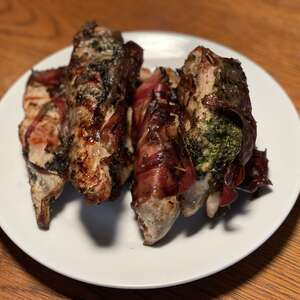

Pesto Chicken

Description:
This wonderful Italian-inspired dish looks very fancy and complicated, but is actually very simple. Pesto, an Italian sauce made from basil, olive oil, garlic, parmesan cheese, and pine nuts, pairs very well with chicken. This dish can be served as is, or it can be added to a variety of other dishes for a fantastic meal!
Ingredients:
- 4 skinless, boneless chicken breast halves
- 1/2 cup prepared basil pesto, divided
- 4 thin slices prosciutto, or more if needed
Steps:
- Preheat oven to 400 degrees F (200 degrees C). Grease a baking dish.
- Spread about 2 tablespoons of pesto per chicken breast over the top of each breast, and wrap each breast in prosciutto slices to cover the entire breast. Place the wrapped chicken breasts into the prepared baking dish.
- Bake in the preheated overn until the chicken is no longer pink, the juices run clear, and the prosciutto is lightly crisped, about 25 minutes.
Optional Tips:
- Slice finished breasts and add to a green salad for a delicious and healthy meal! I also suggest dressing the salad with a Caesar or Italian dressing.
- If you have more pesto, mix some with cooked spaghetti or rotini pasta and toss with sliced breasts.
- Before placing the pesto and prosciutto on the chicken breasts, season the breasts with some salt and black pepper, or maybe a bit of garlic and onion powder.